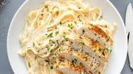

Chicken Alfredo

Chicken alfredo is a classic favorite—a creamy white sauce, long strands of pasta mixed with tender pieces of lean protein.
Ingredients
- Chicken
- Pasta
- Butter
- Heavy whipping cream
- Parmesan cheese
- Salt
- Pepper
- Italian seasoning blend
Steps
- Boil the noodles: Cook the Fettuccine al dente, according to package instructions.
- Cook the chicken: Season the chicken, then pan-fry in oil and butter, for 6 minutes a side, or until an internal temperature reaches 165 degrees F. Transfer to a cutting board and let rest for a few minutes, then cut into 1/2-inch thick slices. Tent with foil, while you prepare the sauce.
- Make the Alfredo sauce: Using the same pan you used to cook the chicken, the cream, butter, and seasonings are incorporated and simmered on medium-low heat until thickened, then the Parmesan is added in until melted and smooth.
- Assemble: Drain the pasta, reserving some of the liquid to loosen the sauce (only if necessary.) Toss immediately with the Alfredo sauce. Divide the pasta among serving bowls and top with a few slices of cooked chicken. Garnish with ,parsley, more Parmesan, and black pepper if desired.